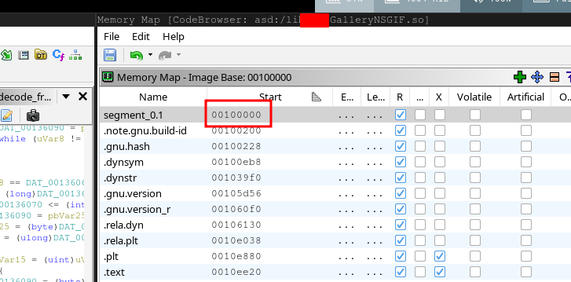
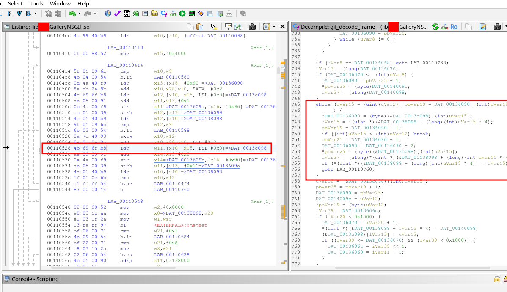

------------------------------------------------------------------ | Reversing Android Native Libraries: Analyzing a GIF Parser Bug | ------------------------------------------------------------------
date: 2026-03-03
author: feelqah
# Introduction
This is part 2 of the previous post:
"Writing a low-tech GIF Fuzzer for Your Android Gallery App"
If you haven't read that one, go read it first.
So the fuzzer found a crash. Great. Now what?
In this post I'll walk through how I went from a tombstone and a crashing GIF,
to identifying the exact line of vulnerable C code inside a closed-source
Android native library. And how after days of debugging I found out someone
already reported the bug back in 2015.
The tools used:
adb - to pull the APK off the phone
jadx-gui - to inspect the Java layer and find the JNI call
unzip - to extract the .so from the APK
ghidra - to decompile the .so and find the crash site
# Pull the APK off the phone
First we need to get the APK from the phone.
We already know the package name: com.XXX.gallery
Ask adb where the APK lives:
adb shell pm path com.XXX.gallery
Output:
package:/data/app/~~TnpwXMPIKu9fkh0h4JbTDg==/com.XXX.gallery-bN1o4PF5cyoqxmkDXffNSw==/base.apk
Pull it:
adb pull /data/app/~~TnpwXMPIKu9fkh0h4JbTDg==/com.XXX.gallery-bN1o4PF5cyoqxmkDXffNSw==/base.apk .
You now have the base.apk on your machine.
# Inspect the Java layer with JADX
An APK is just a ZIP file. But before we crack it open, let's use jadx-gui
to understand the Java side of things. This tells us how the native library
gets called, which helps us orient ourselves later in Ghidra.
Open JADX:
jadx-gui base.apk
The tombstone already gave us the JNI function name:
Java_com_XXX_gallery_util_gifdecoder_NSGif_nativeDecodeFrame
JNI function names follow a strict naming convention:
Java_package_class_method
So this translates to:
package: com.XXX.gallery.util.gifdecoder
class: NSGif
method: nativeDecodeFrame
In jadx, search for "NSGif" and you'll find the class.
You can open the search with: Ctrl+Shift+F
It looks roughly like this:
public class NSGif {
public final int mFrameCount;
public final int mHeight;
public long mInstance;
public final int mWidth;
private static native long nativeCreate(String str);
private static native long nativeCreate(byte[] bArr, int i, int i2);
private static native boolean nativeDecodeFrame(long j, int i);
...
So the Java code calls nativeDecodeFrame(), which maps to our JNI function
inside libXXXGalleryNSGIF.so (gif_decode_frame):
public boolean decodeFrame(int i) {
return nativeDecodeFrame(this.mInstance, i);
}
This is the bridge between the managed Java world and the native C code.
The crash happens on the C side.
You can further inspect the Java side inside jadx-gui, but in this case it's not necessary.
# Extract the .so
Now that we understand the Java side, let's get the native library.
APKs are ZIPs, so just unzip it:
unzip base.apk lib/arm64-v8a/libXXXGalleryNSGIF.so
You now have the .so file.
Confirm it's an ARM64 ELF:
file lib/arm64-v8a/libXXXGalleryNSGIF.so
Output:
ELF 64-bit LSB shared object, ARM aarch64, version 1 (SYSV), dynamically linked, ...
# Load the .so into Ghidra
Open Ghidra, create a new project, and import the .so:
File -> Import File -> libXXXGalleryNSGIF.so
Ghidra will detect it as an AARCH64 ELF shared library.
Accept the defaults and let it auto-analyze (this takes a minute or two).
## The image base problem
When Ghidra loads a shared library (.so), it assigns it a default
image base address. This is important because in order to find the location
of the crash we'll need the image base address and the file offset:
image_base + file_offset
You can check the image base address in Ghidra in the Memory Map window:
Window -> Memory Map
Look at the first segment, and under Start you'll see the base address.
In my case it was: 00100000

And the address you see in the tombstone backtrace is just the file_offset
(the offset from wherever the library was loaded in memory at runtime).
The tombstone gives us this:
#00 pc 0000000000010528 libXXXGalleryNSGIF.so (gif_decode_frame+2476)
That pc value, 0x10528, is the offset within the library.
So in Ghidra, the address we want to navigate to is:
0x100000 + 0x10528 = 0x110528
## Navigating to the crash
Press G (Go To) and type the address:
0x110528
Ghidra will land you inside the gif_decode_frame function.
You can confirm you're in the right place because the symbol name
should appear in the function header, or in the label near the top:
gif_decode_frame
And the decompiler window on the right will show the decompiled code.

# Find the crash site in Ghidra
The tombstone gave us two useful pieces of info:
1. The pc offset: 0x10528 (gif_decode_frame+2476)
2. The SEGV code: SEGV_ACCERR
Navigate to the address. Look at the instruction there. For our crash
(gif_decode_frame+2476) it's a load instruction that reads a word from memory
into register w11, using x10 as the base address and x15 as the offset:
00110528 4b 69 6f b8 ldr w11,[x10, x15, LSL #0x0]=>DAT_0013c098
The decompiler shows you the gif_decode_frame function.
Scroll through it and look near the address you landed on.
You'll see a loop pattern like this in the decompiled code:
while (uVar15 = (uint)uVar27, pbVar19 = DAT_00136090, (int)uVar12 <= (int)uVar15
) {
*DAT_00136090 = (byte)(&DAT_0013c098)[(int)uVar15];
uVar15 = *(uint *)(&DAT_00138098 + (long)(int)uVar15 * 4);
pbVar19 = DAT_00136090 + 1;
if ((int)uVar15 < (int)uVar12) break;
pbVar25 = DAT_00136090 + 1;
DAT_00136090 = DAT_00136090 + 2;
*pbVar25 = (byte)(&DAT_0013c098)[(int)uVar15];
uVar27 = (ulong)*(uint *)(&DAT_00138098 + (long)(int)uVar15 * 4);
if (*(uint *)(&DAT_00138098 + (long)(int)uVar15 * 4) == uVar15)
goto LAB_00110760;
}
So the crash happened at this line:
*pbVar25 = (byte)(&DAT_0013c098)[(int)uVar15];
If we guess that it should look something like this:
*ptr = table[index];
We can assume this is an out-of-bounds read bug.
# Days of debugging (the frustrating part)
Okay so now I have the decompiled code and I know the crash happens
inside a loop that reads from an array using an unbounded index.
What I didn't know yet was whether this was exploitable.
I spent the next few days doing the following:
- Running the crashing GIF through the app with a debugger attached
- Watching register values when the crash hit
- Trying to understand what memory surrounds the crash site
- Trying to craft GIFs that push x15 to different values
The tombstone already told me most of what I needed:
fault addr 0x7229c7d278
x10 0x0000007229c79278
x15 0x0000000000004000
The crashing instruction reads from x10 + x15:
0x7229c79278 + 0x4000 = 0x7229c7d278
x15 is the index into the array. At crash time it was 0x4000 = 16384,
which is past the end of the array. SEGV_ACCERR confirms it hit a
guard page (protected memory sitting right after the array boundary).
x15 is a value being decoded from the GIF data itself.
The GIF controls it. That's when I started Googling.
# Let Me Google That For You
After enough time staring at the decompiled code, a few things
become obvious:
- The function is called gif_decode_frame (Ghidra recovered the symbol)
- Maybe the Android OEM didn't write this library but used an open source one
I started searching GitHub for the function name.
Searched for:
"gif_decode_frame" site:github.com
Found:
https://github.com/hansewu/MovieMator/issues/614
It mentions libnsgif:
#1 0x12ede18ee in gif_decode_frame libnsgif.c:1152
Found the library on github:
https://github.com/netsurf-plan9/libnsgif
Opened it. Read the code.
Then I looked at my decompiled code again.
Concluded that the Android OEM had just taken libnsgif, wrapped it in a JNI
interface, and shipped it as libXXXGalleryNSGIF.so.
The "NSGIF" in the library name was literally right there the whole time.
NetSurf GIF decoder. I just hadn't googled it.
# Finding the CVEs
Once I had the library name I searched for known vulnerabilities and found this:
https://seclists.org/oss-sec/2015/q4/521
Two CVEs, reported in December 2015 by Hans Jerry Illikainen.
CVE-2015-7505 - stack buffer overflow in gif_next_LZW
CVE-2015-7506 - out-of-bounds read via LZW code table
Read the report. The PoC GIFs in the report are 40 bytes each.
Both look exactly like what my fuzzer found but smaller and more precise.
The bug I found with my fuzzer matches CVE-2015-7506, an out-of-bounds read
in the LZW decoder loop.
The Android OEM shipped a version of libnsgif with a 10-year-old unpatched
vulnerability in a preinstalled system app on Android 12 devices
sold in 2023.
To confirm both PoCs still work, I took the two GIF byte arrays directly
from Illikainen's report, saved them as oob.gif and stack.gif,
sent them to the phone:
adb push oob.gif /sdcard/Download/
adb push stack.gif /sdcard/Download/
Opened each in the gallery. Both crashed. Tombstones confirmed the same
gif_decode_frame function.
Lesson: before you spend days reversing a crash in a closed-source binary,
check if the symbol names in Ghidra match any open source library.
It saves a lot of time.
They of course patched the issue, but older phones won't get this update unless
you manually download the newest APK and install it, which is also not recommended.
Installing APKs from 3rd party sources carries its own risks.
← back